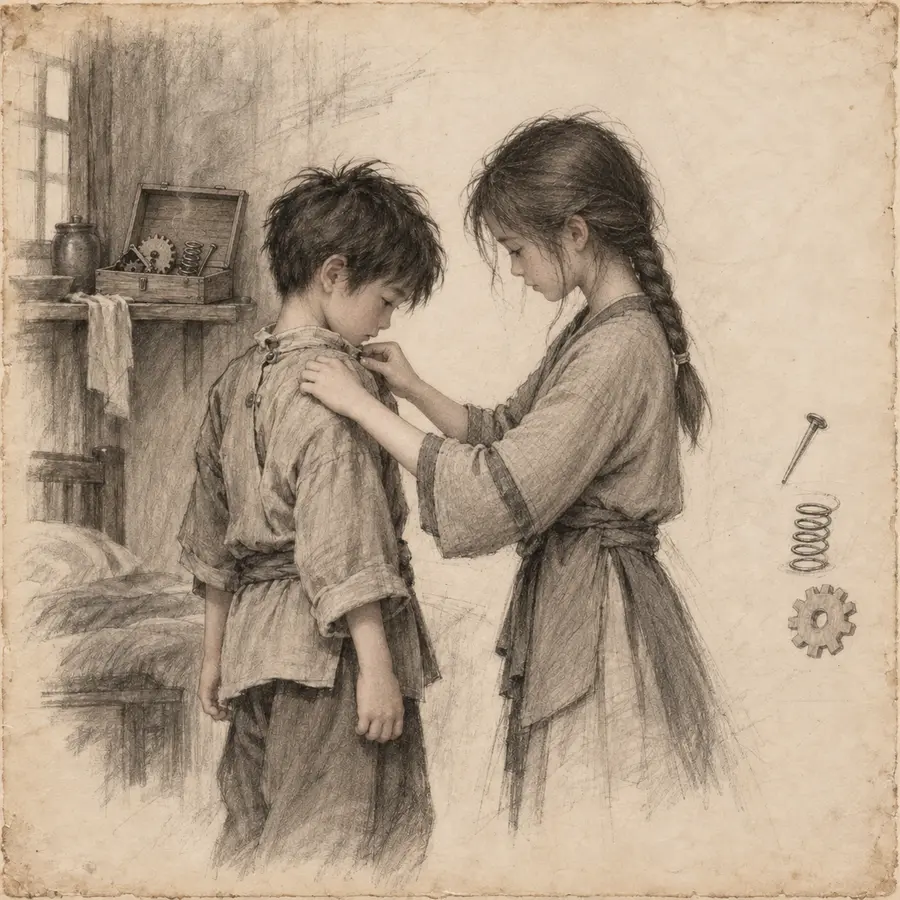

01Снимок вечности
I · Дом и первая утрата
Когда молчит Небо
Сейчас выбрано
Дом в движении
На Сия поправляет рубаху восьмилетнего Влада; рядом остаются тихие следы его механизма.
0:00
0:00
Полная история
Все композиции
Четырнадцать мгновений — от дома и первой утраты до решения остановиться и позвать мастера.